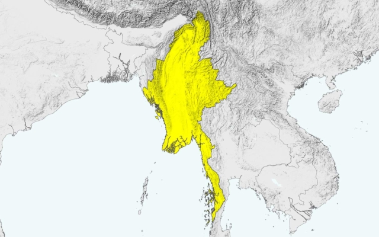

The role of Facebook in the Myanmar genocide is a complex and tragic example of how social media can inadvertently contribute to real-world violence. In 2017, the Myanmar military launched a campaign against the Rohingya, a predominantly Muslim ethnic minority in Myanmar's northern Rakhine State. This campaign involved systematic murder, rape, and burning of homes, leading to over 700,000 Rohingya fleeing the region. Throughout this period, Facebook's algorithms played a significant role in amplifying hatred and inciting violence against the Rohingya. The platform, powered by Meta's engagement-based algorithmic systems, became an echo chamber for anti-Rohingya content, filled with inflammatory posts that constituted incitement to violence, hostility, and discrimination. This content was not only shared widely but also reached the highest levels of Myanmar's military and civilian leadership. Senior General Min Aung Hlaing, for instance, declared on Facebook in 2017 that Myanmar had no Rohingya race.
Myanmar
Percentage of internet usage penetration rate with mobile phone in Myanmar (2005-2017)
Despite warnings from local civil society activists and internal research acknowledging the potential for real-world harms from its algorithms, Meta failed to take appropriate actions. Internal studies dating back to 2012 showed Meta was aware of how its recommendation systems could exacerbate extremism. Yet, it consistently failed to enforce its policies on hate speech. The United Nations' Independent International Fact-Finding Mission on Myanmar concluded that social media played a significant role in the atrocities, underscoring the devastating impact Facebook had on the Rohingya community. Rohingya activist Mohamed Showife lamented how Facebook destroyed the Rohingya people's dream of living peacefully like others in the world. This case highlights the dire consequences of unchecked digital influence and the responsibility of tech giants like Facebook in moderating content to prevent such tragedies.